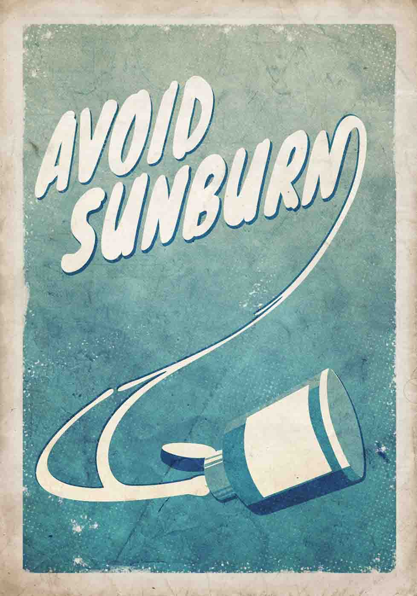

Your skin is the body's largest organ. It protects us, helps regulate body temperature, and permits sensation. Skin needs care through our lives, especially protection from the sun and ultraviolet (UV) radiation.
Sun's effects on the skin — wrinkles, freckling, and especially skin cancers — can be significantly lessened or prevented. Follow the ABC method, even on overcast days, when 40% of UV rays still get through clouds.
A is for avoiding the sun exposure at mid-day (10am to 4pm) when it's most intense. Play in the shade or enjoy the pool or beach under an umbrella.
B is for blocking the damaging UV rays by applying sunscreen with a sun protection factor (SPF) of 15 or higher for adults and 30 or higher for children. Reapply frequently.
C is for covering up with clothing, brimmed hats, and sunglasses with UV protection when heading outdoors for longer periods of recreation, exercise, and work.
And tanning — whether in the sun or at a salon — damages the skin over time, even if you wear sunscreen. The temporary "glow" of a tan masks the cumulative, long-term effects of UV exposure.
Protect the health of your skin every day of the year: avoid, block, and cover up.
